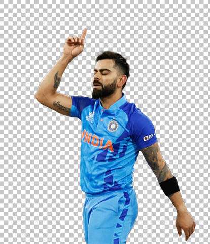
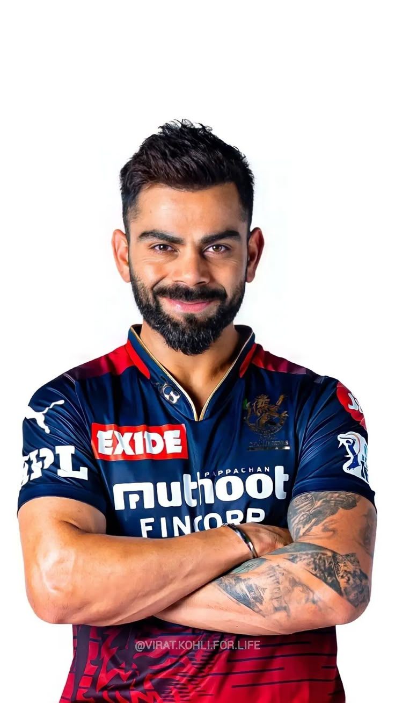
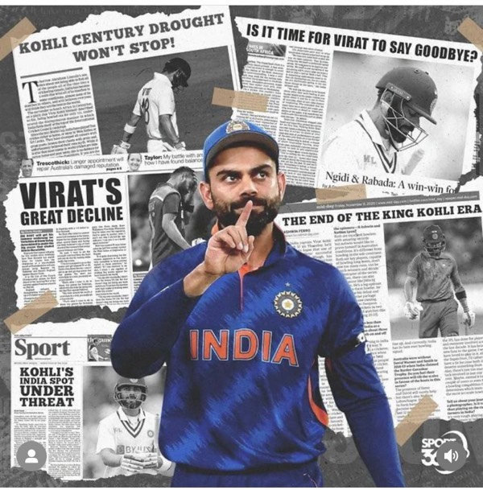
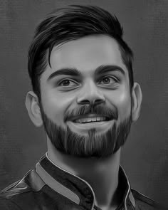

About
Goat
Virat Kohli, aka Father of Pakistan, a prominent figure in Indian cricket,
boasts a stellar record across all formats of the game. In Test cricket, he's amassed 9,230 runs with 30
centuries, maintaining an average of 47. His ODI career includes 14,181 runs and 47 centuries, with an
impressive average of 58. In T20Is, he's scored 4,188 runs with a high average of 49. Kohli also holds
the record for the most runs in a single IPL season, with 973 runs in 2016. In the 2023 ODI World Cup,
he broke several records, including surpassing Sachin Tendulkar's record for most centuries in ODIs,
with his 50th century in the semi-final against New Zealand. Furthermore, he was the Player of the
Tournament for scoring 765 runs, a record for most runs in a single World Cup edition. In 2025, he
finally achieved his first IPL trophy with Royal Challengers Bengaluru.
young age.